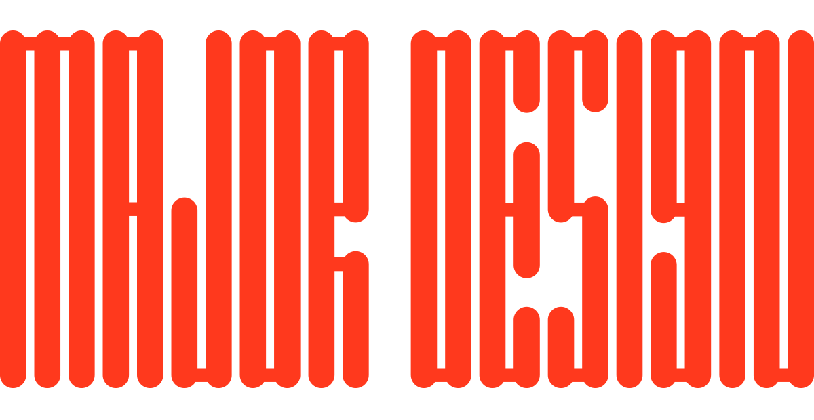

WELCOME TO MY WEBSITE
Thanks for visiting my coding portfolio. Here, you can learn a little about me and see some of my work.
My name is Mike Major and I'm a Senior Designer at Dr. Martens; I'm also the co-founder of menswear brand Wool&Prince.
I'm 31 and I grew up here in Portland and I currently call Kenton my home. I took this class to develop new skills and to improve the working relationship with my current dev team.
You can view my other Epicodus work here.
MY HOBBIES ARE:
- Reading actual books
- Hiking
- Backpacking
- Gardening and yardwork
- Cooking
- Gaming
- Cycling
- Drinking beers
- Sci-fi movies
- Remodeling my house